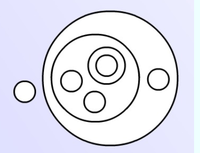
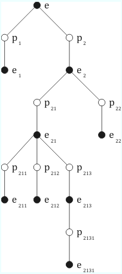

Logic
Logische Begriffe
- und, oder, wenn-dann
- kein, alle, kein, min. ein,
- dieses, jenes
- Identität
Sätze, die (möglicherweise) nicht in der Quantorenlogik 1.Stufe formalisierbar sind:
- There are at least as many As as Bs.
- Some relative of each villager and some relative of each townsman hate each other. 1
Formalisieren
hgfdsFgg
Korrektheitskriterien
Warum wird Logik mittels formaler Sprachen verwendet?
Sind formale Sprachen essentiell oder sind sie nur Werkzeuge, etwa mit dem Status einer effizienten Notation?
Is there a coginitive impact?
Formale Sprache für Begriffsrelationen
- x ist ein y
- Alle A sind B: A < B
Umfangsrelationen: wie Mengen Inhaltsrelationen:
Schlussarten
Abduktion
Schluss auf die beste (oder plausible) Erklärung.
Nach Peirce ist die A. die "einzige logische Operation, die irgendeine neue Idee einführt" (CP 5.171) und somit die Prämissen für nachfolgende deduktive und induktive Schlüsse findet oder erfindet.
Man macht eine überraschende Beobachtung B.
Man erfindet eine Regel, die B erklärt. A -> B und schließt fröhlich auf A.
Beispiele:
- Ist Sherlock Holmes ein Abduktionsmeister?
- Klinische Diagnostik
- Fehlersuche in technischen Systemen
Fallacies
Ad hominem
- Attacking the person arguing instead of the argument.
Examples
- People like you don't understand what it's like to grow up black in America. You have no right to argue about the gang violence on our streets.
- You cheated and lied to your wife, but you expect the jury to believe you now?
- Don't listen to Dave's argument on gun control. He's an idiot.
Ad verecudiam
- Appeal to authority.
Examples
- Richard Dawkins, an evolutionary biologist and perhaps the foremost expert in the field, says that evolution is true. Therefore, it's true.
The Markable Mark
A tree can be marked or unmarked, we use the following symbols for the final value of a marking pattern:
- marked: 1
- unmarked: 0
Unmark a mark: (()) and then remark it : (()) ()
Evaluation rules
- (( )) ->
- () () -> ()
Transformation rules
- -> (( ))
- () -> () ()
Steps of enlightenment
- The father
- Figures out that the forester is marking or unmarking trees but he doesn't understand the system.
- The son
- The son understands that there is a system in place. There are rules to reduce complex patterns to simpler ones. In the end this always leads to a result (0 or 1).
- The daughter
She can explain why the sons rules work. She can talk about the system in an abstract way and even state and proof theorems.
Calls the patterns expressions:
- Which expressions are regular?
- Prime expressions: (e)
- Molecular expressions: (e_1) (e_2) …
- Factorization: split molecular expression into prime expressions
Content of an expression: the interior expression e in (e)
Expressions have a tree structure:


- Recursion: factorize, inspect, factorize, inspect, etc.
Every expression can be evaluated by 2 rules:
- (Factors) The value of an expression is 1 if any of its prime factors is 1, otherwise it's 0.
- (Content) The value of a prime expression is the opposite of it's content.
Those rules have to be applied recursively.
- Which expressions are regular?
- The grandson (Arithmetic)
He abstracts away from marks and their meaning - no more words, only symbols. He also tries to do evaluation in a mechanical machine like way. Also he introduces the idea of transforming one expression into another if the have the same value, applying new rules and introducing the equal sign (Identity).
Two fundamental equations:
- (( )) = cancel
- () () = () repeat
- The other grandson (Algebra)
Form! We enter the realm of calculation with letters.
(() x)
Footnotes:
Hintikka, Quantifiers vs. Quantification Theory, Linguistic Inquiry, 1974, 153-177.